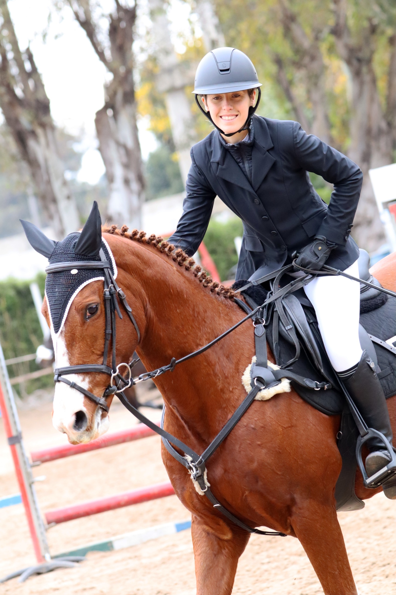

Horse Jumping
Equestrian jumping is more than a sport; it is a dance between horse and rider, a symphony of trust, grace, and unspoken communication. Each jump is a testament to the bond that transcends words, where every movement and breath sync in perfect harmony. The thrill of soaring over obstacles, the wind brushing past, and the ground falling away beneath you, create moments of pure, unadulterated freedom. This sport demands dedication, resilience, and an unwavering connection with your equine partner, transforming ordinary rides into extraordinary flights of passion and precision.
In the heart of the arena, time slows as you approach each jump. Your horse's muscles coil beneath you, ready to launch into the air with an elegance that defies gravity. It’s a pulse-quickening experience that leaves you breathless, a dance where both participants move as one, navigating the course with a blend of instinct and skill. The slightest cue from you, a shift in weight, a gentle squeeze, and your horse responds with trust and strength, clearing each obstacle with a grace that feels almost magical. It’s in these moments, suspended between takeoff and landing, that you feel truly alive, completely in sync with a magnificent creature whose heart beats in rhythm with your own.
Equestrian jumping is a testament to the human spirit's desire to connect deeply with nature, to forge a partnership based on mutual respect and shared ambition. It’s a sport that challenges you to be better, to push boundaries, and to celebrate the beauty of every stride and leap. The journey is filled with highs and lows, victories and lessons, but through it all, the bond with your horse grows stronger. It’s a love affair with the sport, where every ride is a new chapter in a story of courage, determination, and unyielding passion. In the arena, you find not just a sport, but a calling, a way of life that fills your soul with joy and purpose.